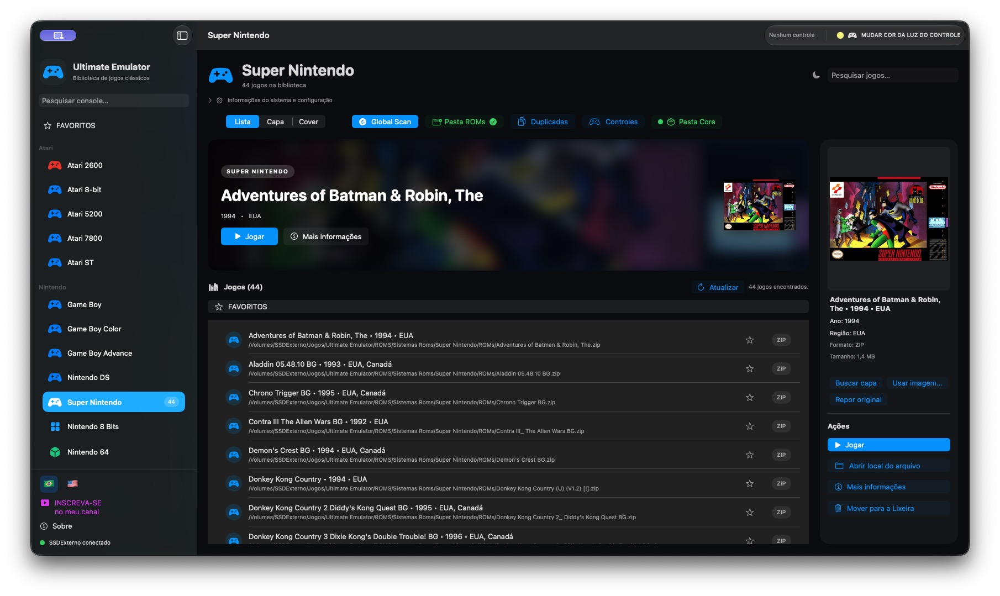
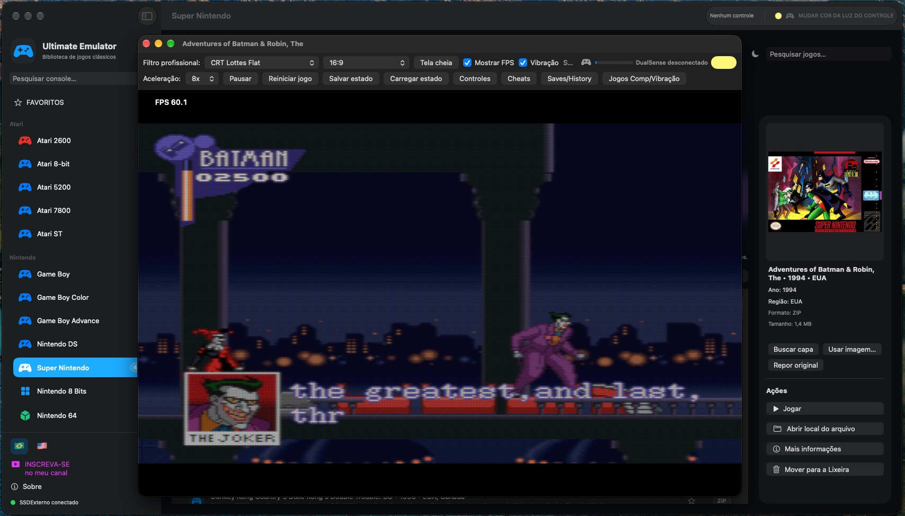
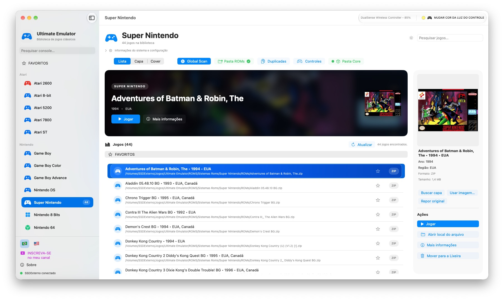
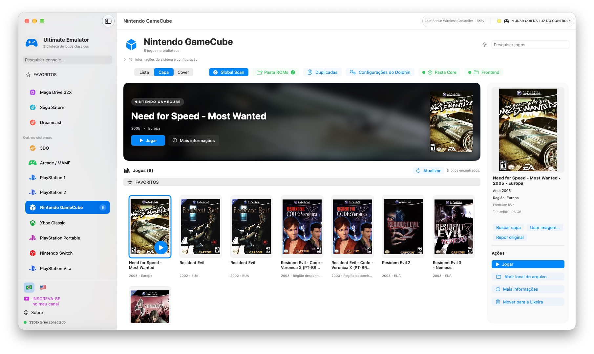

▦
Organizado por plataforma
Encontre cada sistema, jogo e informação em um fluxo único, com busca e capas.
Uma experiência organizada para descobrir, visualizar e jogar clássicos no macOS e no Windows — com capas, favoritos por plataforma e uma interface feita para a sua coleção.

O Ultimate Emulator transforma uma pasta de arquivos em uma biblioteca clara, bonita e fácil de navegar.
Encontre cada sistema, jogo e informação em um fluxo único, com busca e capas.
Seus favoritos ficam agrupados por plataforma, com seleção múltipla e remoção em lote.
Lista, grade, Cover Flow, filtros de imagem, controles, saves e save states.
Os downloads ficam hospedados no Google Drive para manter os pacotes grandes fora do repositório.
Biblioteca unificada com suporte a múltiplos sistemas, capas, favoritos e integração com diferentes frontends.
Baixar para macOS →A versão para Windows do emulador, disponibilizada como pacote externo e sem ROMs pessoais.
Baixar para Windows →O mesmo cuidado em ferramentas para vídeo, áudio e legendas. Veja as capturas e conheça cada aplicativo na vitrine oficial.
Visitar Rafael Software →

